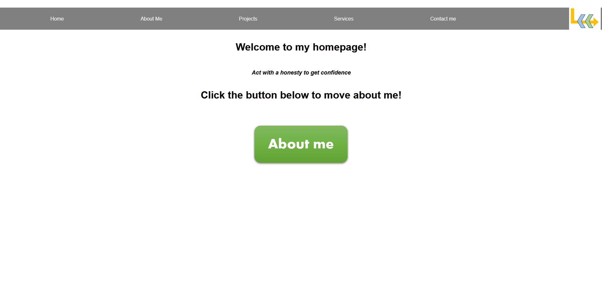
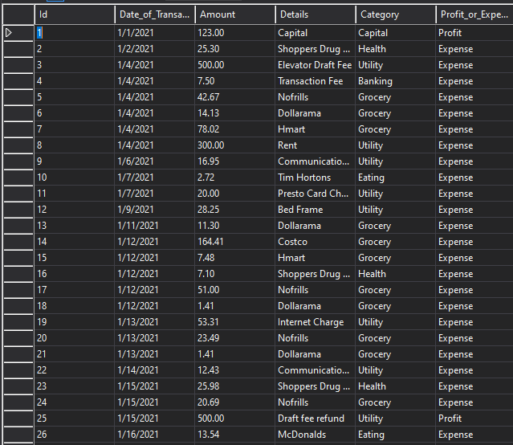
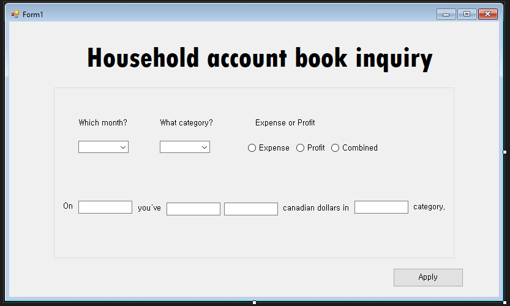
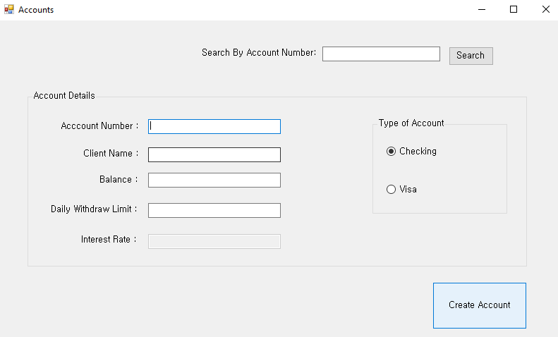

Express Portfolio
- Using javascript, html, css, ExpressJS, NodeJS to design project webpage
- Split to use different View templates and partials by implementing the EJS templating engine

Household account book
- Using SQL to establish Household account book
- Using C# to build an application program inquiries the database


Account inquiry
- Using C# to build an application program that allows users to add account information or inquiry of information created.
